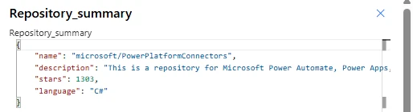

- Power Automate
- Level 3 · Triggers and connectors · 7 of 7
HTTP requests and custom connectors
More than a thousand connectors exist, but sooner or later you need a service that has none: an internal API, a partner system, a public data service. The HTTP action calls any web API directly. A custom connector wraps the same API so makers can use it like any other connector.
The demo flow


Reading the response

body('HTTP_GET_repository')?['stargazers_count']| Piece | What it does |
|---|---|
body('HTTP_GET_repository') | The JSON the API returned. |
?['stargazers_count'] | One field from it. Use Parse JSON if you want the fields in dynamic content. |
outputs('HTTP_GET_repository')?['statusCode'] returns the HTTP status: 200 means success, 4xx means the request was wrong (401 not signed in, 404 not found), 5xx means the server failed.
Authentication
Most APIs need credentials. The HTTP action supports Basic, Client certificate, Microsoft Entra ID OAuth (Active Directory OAuth) and Managed identity, or an API key in a header. Never type secrets into the action itself: keep them in an environment variable backed by Azure Key Vault, and turn on Secure inputs and Secure outputs in the action's settings so they don't appear in run history.
When to build a custom connector
| HTTP action | Custom connector |
|---|---|
| One or two calls in one flow | The same API used in many flows, apps or agents |
| You manage the URL, headers and auth in each flow | Defined once: host, auth, actions and their inputs |
| Raw JSON in, raw JSON out | Friendly action names and fields in dynamic content |
| Premium connector | Premium, and can be classified in data policies on its own |
A custom connector is built from an OpenAPI (Swagger) definition, a Postman collection, or from blank in the wizard, inside a solution so it moves between environments with your flows.
New to this? Start from the basics optional
API: a web address a program calls to get or change data, instead of a person using a web page.
Method: GET reads, POST creates, PATCH/PUT updates, DELETE removes.
Header: extra information sent with the request, such as the format you accept or your API key.
Build it step by step optional
- Create an instant flow and add HTTP (premium).
- Method GET, URI
https://api.github.com/repos/microsoft/PowerPlatformConnectors, headerUser-Agent= any name. - Add a Compose with
outputs('HTTP')?['statusCode']. - Add a Compose that builds an object from
body('HTTP')?['full_name'],?['stargazers_count']and?['language']. - Test, then change the URI to a repository that does not exist and look at the 404 status and error body.
Common mistakes
- Secrets typed into headers. They show up in run history for anyone who can see it.
- Ignoring the status code. A 404 or 500 can still return a body; check the status before using it, or configure run after (Level 4).
- Calling an API in a tight loop. Most APIs limit requests per minute; batch calls or add a delay.